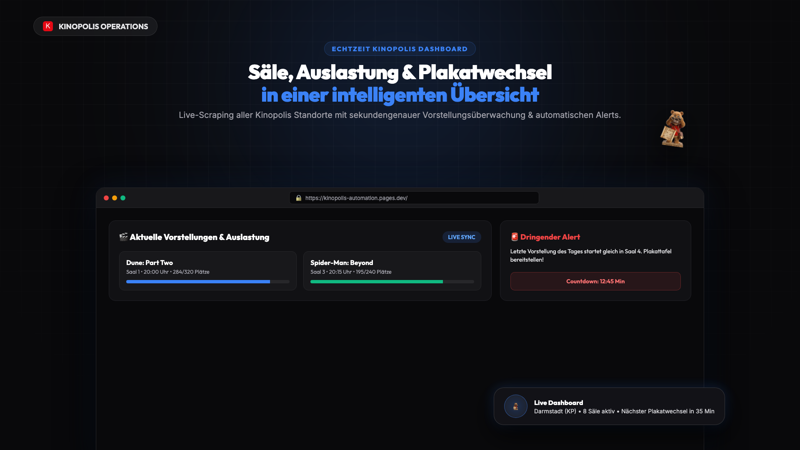
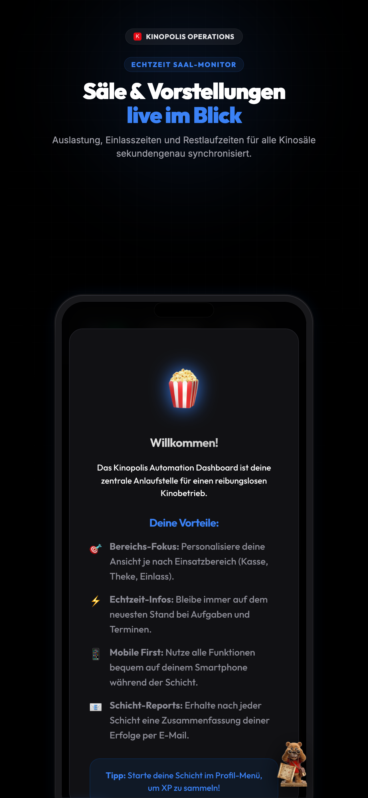
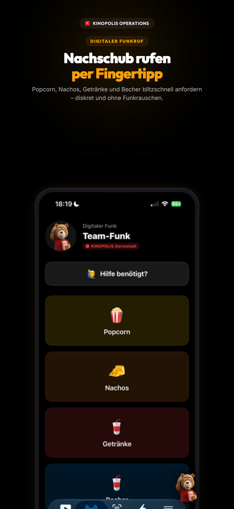
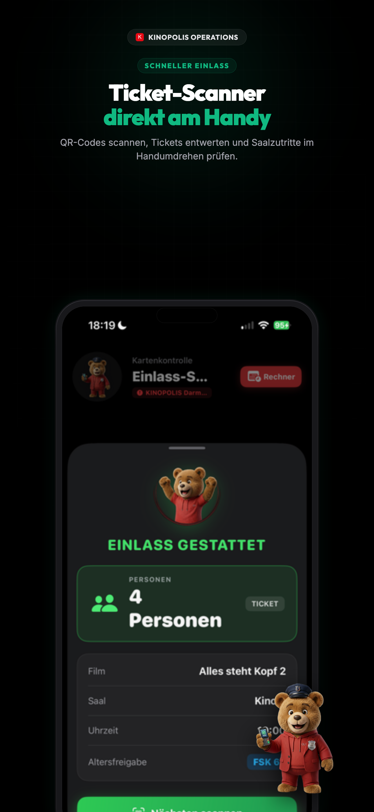
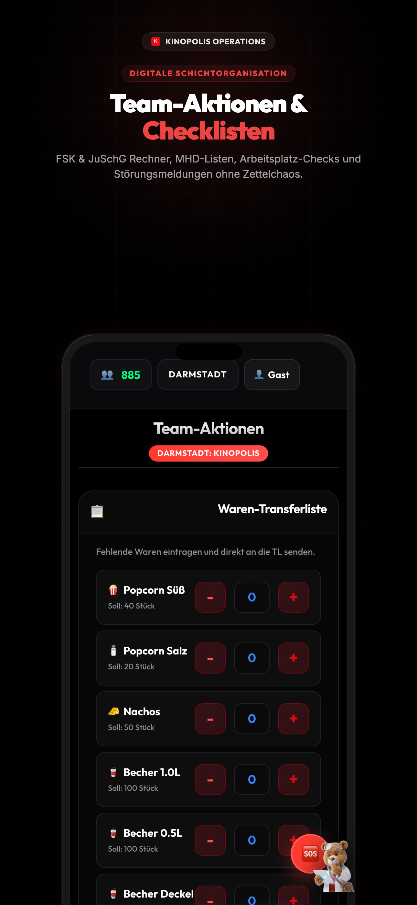
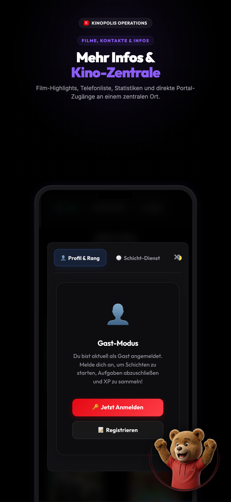

Strg + P (oder Cmd + P) und wähle "Als PDF speichern". Im Druckdialog unter "Weitere Einstellungen" am besten Hintergrundgrafiken aktivieren.

Der digitale, smarte Assistent für unser Service-Team
admin
Passwort: admin123
Der Service sieht live auf dem Handy, wann ein Saal endet. Kein unnötiges Hin- und Herlaufen mehr für Einlass und Reinigung.
Das Team weiß genau, wann die Foyer-Wellen (Auslass/Einlass) kommen, und kann sich rechtzeitig an Kasse und Theke aufstellen.
Der lästige Papierkram zum Schichtende entfällt. Ein Klick generiert den fertigen Bericht für die Übergabe per WhatsApp.
Automatische Erinnerungen (Countdowns) für den rechtzeitigen Plakatwechsel und schnelle Störungsmeldungen per App direkt aus dem Saal.
Schnelles und fehlerfreies Zählen von Bechern und Popcorn-Tüten am Handy statt auf unübersichtlichen Klemmbrettern.
Die App in der Hosentasche: Digitaler Funkruf ans Team, FSK-Rechner an der Kasse und Ticket-Scanner für den Einlass.

Saal Radar

Digitaler Funk

Ticket-Scanner

FSK-Rechner

Schichtplan
Erfolge formuliert nach der Google-Formel: "Wir haben [X] erreicht, gemessen an [Y], durch [Z]."
HTML5, Vanilla CSS (Glassmorphism, Dark Mode) & ES-Module für maximale Performance. Gebaut mit Vite.
Node.js & Express mit Cheerio für Live-Scraping. Serverless Skalierung via Cloudflare Workers & D1 (SQLite).
Verpackt via Capacitor als echtes iOS Native Target sowie als Progressive Web App (PWA) inkl. Service Worker für Offline-Fähigkeit.
Maßgeschneiderte Print-Engine für millimetergenaue PDF-Reports und ein nativer WhatsApp Markdown Exporter.
Vollständige Integration der Personalplanung und Zeiterfassung, um teure externe Systeme (wie ATOSS) mittelfristig komplett abzulösen.
Nutzung von historischen Daten, Wettervorhersagen und Ferienkalendern, um den Personal- und Warenbedarf automatisch und präzise vorherzusagen.
Automatisierte Bestellvorschläge für Gastro-Waren (Popcorn, Nachos, Getränke) basierend auf aktuellen Ticketverkäufen und Lagerbeständen.
Schnittstellen zu weiteren Kassensystemen und Ticketanbietern, um alle Umsätze und Besucherströme in einem Dashboard zu bündeln.
Alle Fäden eines Kinopolis-Standorts laufen hier zusammen. Die App ist der zentrale Dreh- und Angelpunkt für das gesamte Schichtmanagement.
Keine analogen Klemmbretter, unübersichtliche Excel-Listen oder unstrukturierte WhatsApp-Gruppen mehr. Alles ist nahtlos in einer digitalen Umgebung vereint.
Das System protokolliert nicht nur, es denkt mit. Es prognostiziert Spitzenzeiten und hilft dem Personal, den Besucheransturm stressfrei und effizient zu bewältigen.
Eine moderne, pfeilschnelle Oberfläche, die dem Personal Spaß macht und durch intuitives Design Einarbeitungszeiten auf ein Minimum reduziert.